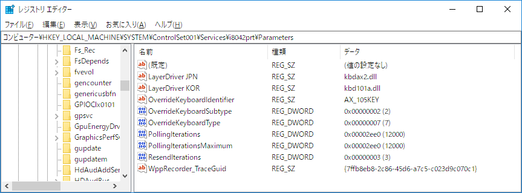

Fluent Python 例18-2 スピナー
Posted on 2019年03月29日 (金) in Python
1 test
1.1 def
1[1] 2019-03-30 13:25:11 (15.7ms) python3 [3]
1Posted on 2019年03月29日 (金) in Python
1[1] 2019-03-30 13:25:11 (15.7ms) python3 [3]
1Posted on 2019年02月15日 (金) in Atom
AtomテキストエディタにPython開発環境を構築します。細かい設定を丁寧に説明し、快適な開発環境を整備することを目指します。
それでは，Python開発に役立つパッケージを紹介していきます．各節のヘッダがパッケージ名になっているので，特に記載のない限り，その名前でパッケージを検索してインストールしてください．その後，Settings，Keymap，Stylesheetの各項目を必要に応じて設定していきます．
Atom内でターミナルを実行します．
AtomでVimキーバインドを実現します。
Posted on 2019年01月20日 (日) in Machine Learning
2018/9/3の記事のアップデート版です．今回は，ソニー製Neural Network Librariesもインストールし，今後両者を比較する準備とします．
今回インストールする主なPythonパッケージは，以下の通りです．
インストールするPC環境は以下の通りです：
Posted on 2018年09月04日 (火) in Misc
2018/2/11の記事では，Happy Hacking Keybordの設定を行いました．その時には，右Altキーを［全角／半角］キー，すなわち，全角と半角のトグルキーとして設定しました．今回は，以下の参照記事をもとに，右Altキーを全角，左Altキーを半角に設定します．
まずは，右Altキーを［全角／半角］キーした設定をもとに戻します．次の記事を参照しました．
［スタート］ボタンを右クリックして［ファイルを指定して実行］を選択し，「regedit」と入力して，レジストリエディタを起動します.
左ペインから，【HKEY_LOCAL_MACHINE\SYSTEM\ControlSet001\Services\i8042prt …
Posted on 2018年09月03日 (月) in Machine Learning
2018/9/1の記事では，CUDA Toolkitなどをインストールした上で，pip経由でTensorFlowおよびKerasをインストールしました．実は，Condaを使うと，CUDAを手動でインストールする必要がなくなります．実際に検証してみました．
まず，コントロールパネルのプログラムのアンインストールで，CUDA関連のアプリを全て消去します．再起動後に，以下を実行してみます．
(base) > activate ml
(ml) > python mnist_cnn.py
(中略)
ImportError: Could not find 'cudart64_90.dll'. TensorFlow requires that this DLL be installed in a directory that is named in your %PATH% environment …Posted on 2018年09月01日 (土) in Machine Learning
Pythonを使って機械学習の勉強をしていきます．今回は，scikit-learnとTensorFlowをインストールします．この記事では，必要なパッケージなどをインストールする方法を順を追って説明し，勉強を開始できる状態にします．今回インストールする主なPythonパッケージは，以下の通りです．
GPUを使って計算するため，CUDA ToolkitおよびcuDNNもインストールします． これらは，使用するTensorFlowが対応しているバージョンをインストールする必要があります．特に何も指定しないと，最新版がインストールされて，TensorFlowパッケージが実行できないというケースがあるので注意が必要です．具体的には，以下のバージョンを使います：
インストールするPC環境は以下の通りです：
Posted on 2018年08月31日 (金) in Atom
AtomテキストエディタにPython開発環境を構築します．細かい設定を丁寧に説明し，快適な開発環境を整備することを目指します．
それでは，Python開発に役立つパッケージを紹介していきます．各節のヘッダがパッケージ名になっているので，特に記載のない限り，その名前でパッケージを検索してインストールしてください．その後，Settings，Keymap，Stylesheetの各項目を必要に応じて設定していきます．
AtomでVimキーバインドを実現します．このパッケージがなかったら，Atomを使っていないでしょう．
以下のキーマップを有効にします．
Y: 'yank-to-last-character-of-line'_: 'replace-with-register'c c: 'change inner-smart-word';: 'inner-any-pair' in 'operator-pending-mode';: 'inner-any-pair' in 'visual-mode'以下の設定を有効にします．
Posted on 2018年02月11日 (日) in Misc
Happy Hacking Keyboard Professional2 Type-S英語配列モデルを購入しました．より快適に使うための設定をまとめておきます．
以下の記事を参考にしました．
以下の設定にしています．

「英語(米国)」を追加しました．

Posted on 2018年01月31日 (水) in Machine Learning
Pythonを使ってディープラーニングの学習をしていきます．この記事では，必要なパッケージなどをインストールする方法を順を追って説明し，学習を開始できる状態にします．今回インストールする主なPythonパッケージは，以下の通りです．
GPUを使って計算するため，CUDA ToolkitおよびcuDNNもインストールします． これらは，使用するPythonパッケージが対応しているバージョンをインストールする必要があります．特に何も指定しないと，最新版がインストールされて，Pythonパッケージが実行できないというケースがあるので注意が必要です．具体的には，以下のバージョンを使います：
インストールするPC環境は以下の通りです（PC新調に伴い2018/2/4に更新）：
Posted on 2018年01月03日 (水) in Pelican
Google Fonts + 日本語早期アクセスの設定を行います．今回は，さわらびゴシックを使ってみます．本ブログのPelicanテーマであるVoidyBootstrapでの設定方法になります．
pelicanconf.pyに以下を追加します．
THEME = 'voidy-bootstrap/'
STYLESHEETS = (
'custom/custom.css',
# other stylesheets
)
STYLESHEET_URLS = (
'https://fonts.googleapis.com/earlyaccess/sawarabigothic.css',
# other stylesheet_urls
)[1] 2019-03-30 13:25:12 (15.6ms) (python) [2]
voidy-bootstrapディレクトリ下にstatic/css/custom.cssを作成し，以下を追加します．
body {
font-family: 'Sawarabi …